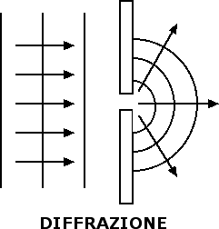
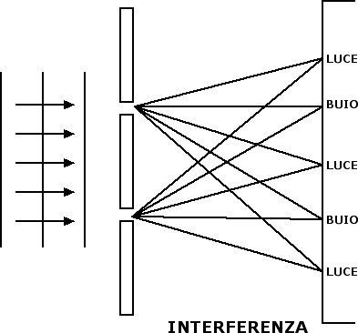

Onde e suoni
Diffrazione e interferenza
La luce è un'onda elettromagnetica che si propaga anche nel vuoto con una velocità costante e pari a c = 300 000 km / s. Come abbiamo visto accennando ai modelli di luce, la natura ondulatoria della luce venne per la prima volta messa in evidenza da Huygens. Secondo il modello ondulatorio i raggi luminosi che abbiamo utilizzato finora per descrivere la luce ci permettono di individuare solo la direzione di propagazione dell'onda luminosa. In base al modello ondulatorio la luce va descritta per mezzo di fronti d'onda, ossia tramite l'insieme delle posizioni raggiunte dalle creste o dai ventri nella loro propagazione.
La natura ondulatoria della luce emerge soprattutto quando prendiamo in considerazione i fenomeni della diffrazione e dell'interferenza. La diffrazione si manifesta quando il fronte luminoso incontra una fenditura avente dimensioni paragonabili a quelle della lunghezza d'onda della luce incidente. In questi casi il fascio di luce che riesce a passare attraverso la fenditura si comporta come se fosse una sorgente luminosa puntiforme e dunque la luce si propaga al di là della fenditura in tutte le direzioni.


Ancora più interessante è quanto avviene quando un fascio luminoso incontra due fenditure di dimensioni paragonabili a quelle della lunghezza d'onda del fascio. Le due fenditure si comportano come due sorgenti puntiformi di luce. Cosa si vede su un muro posto oltre le due fenditure? Punto per punto si devono andare a sommare gli effetti delle onde che si propagano dalle due fenditure (principio di sovrapposizione). Quando le due onde arrivano sul muro avendo percorso cammini aventi la stessa lunghezza o cammini che differiscono per un numero intero di lunghezze d'onda (λ, 2λ, 3λ) avremo che le creste provenienti da una fenditura si sommano alle creste provenienti dall'altra fenditura. In questo caso si raddoppia l'ampiezza dell'onda e sul muro vediamo luce (l'interferenza è detta costruttiva). Quando invece le due onde arrivano sul muro dopo aver percorso cammini aventi lunghezze che differiscono per un numero semintero di lunghezze d'onda, ossia λ / 2, 3 λ / 2, 5 λ / 2, la cresta che proviene da una fenditura incontra il ventre che proviene dall'altra fenditura. I due effetti si sommano e sul muro vediamo buio: parliamo in questo caso di interferenza distruttiva. Le zone di buio si alternano alle zone di luce e si crea così una figura di frange d'interferenza.
Nel 1924 De Broglie predisse che anche le particelle avevano una natura ondulatoria e potevano dare origine a fenomeni di interferenza e diffrazione. Qualche anno dopo tali fenomeni vennero rilevati sperimentalmente in una serie di esperimenti condotti con gli elettroni da Thomson, Davisson e Germer. Era l'atto di nascita di una nuova teoria fisica, la meccanica quantistica, fondamentale per la descrizione del mondo microscopico.